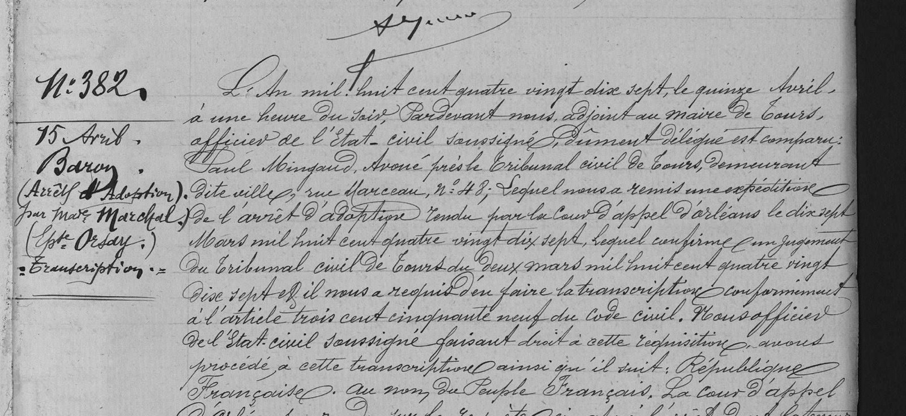

Acte d'état civil · 15 avril 1897
Transcription de l'arrêt d'adoption (Baron, par Marchal épouse Orsay), Tours, 15 avril 1897
Ce document établit
- Procès-verbal du juge de paix du canton de Tours, 19 février 1897 : Mme Orsay adopte, du consentement de son mari, Mlle Baron, qui accepte. vérifié A0050
- Jugement sur requête du tribunal civil de Tours, 2 mars 1897 : il y a lieu à l'adoption. vérifié A0051
- Arrêt de la cour d'appel d'Orléans, chambre civile, audience publique du mercredi 17 mars 1897 : confirme le jugement ; il y a lieu à l'adoption de Jeanne Augustine Baron par Anne Louise Angélique Marchal, épouse Orsay. vérifié A0052
- Le 15 avril 1897, l'arrêt est transcrit sur les registres de Tours à la requête de Paul Mingaud, avoué près le tribunal civil de Tours. vérifié A0053
- La requête déclare l'adoptante âgée de plus de cinquante ans, sans enfants ni descendants légitimes, et plus âgée de plus de quinze ans que l'adoptée. vérifié A0054
- La requête déclare que l'adoptante a fourni à Jeanne Augustine « des secours ininterrompus depuis son enfance jusqu'à ce jour ». vérifié A0055
« qu'elle lui a fourni des secours ininterrompus depuis son enfance jusqu'à ce jour »
- En mars 1897, Anaïs, son mari Louis Edouard Orsay et Jeanne Augustine demeurent tous à Tours, 7 rue Saint-Pierre. vérifié A0056
- En 1897, Louis Edouard Orsay est chef de bureau au chemin de fer d'Orléans. vérifié A0057
- Des « pièces à l'appui » ont été produites au procureur de la République de Tours ; elles ne sont pas recopiées dans la transcription. vérifié A0058
- Anaïs est née avant mars 1847. partiellement vérifié A0059
- La loi n'empêchait pas Anaïs d'adopter une fille naturelle qu'elle n'aurait pas reconnue. partiellement vérifié A0060
- L'identité de la mère de Jeanne Augustine n'est pas établie. non résolu A0080
- Le père de Jeanne Augustine n'est pas identifié. recherche infructueuse A0081
- On ne sait pas qui a élevé Jeanne Augustine au quotidien, ni où, entre 1873 et 1897. non résolu A0082
- Le Code civil de 1804 (art. 343-359) réserve l'adoption aux personnes de plus de 50 ans sans enfants ni descendants légitimes, exige l'adopté majeur, des soins pendant six ans de sa minorité, un acte devant le juge de paix, l'homologation du tribunal puis de la cour d'appel, et ajoute le nom de l'adoptant à celui de l'adopté. vérifié A0090
« les articles trois cent quarante trois, trois cent cinquante trois, trois cent cinquante cinq et trois cent cinquante six »
Ce document contredit
- Événement : Jeanne Augustine est adoptée le 17 Mars 1897 (24 ans) par sa "tante" Anne Louise Angelique MARCHAL, épouse de Louis Edouard ORSAY. — selon l'arbre transmis contredit AR0027
Transcription
dossier/preuves.md#A8
Personnes concernées
Jeanne Augustine BARON MARCHAL° 1873 † 1922Anne Louise Angélique MARCHAL° 1844Louis Edouard ORSAY° 1841 † 1903
Recopie la requête à la cour d'Orléans et l'arrêt du 17 mars 1897. Les pièces à l'appui ne sont pas recopiées.